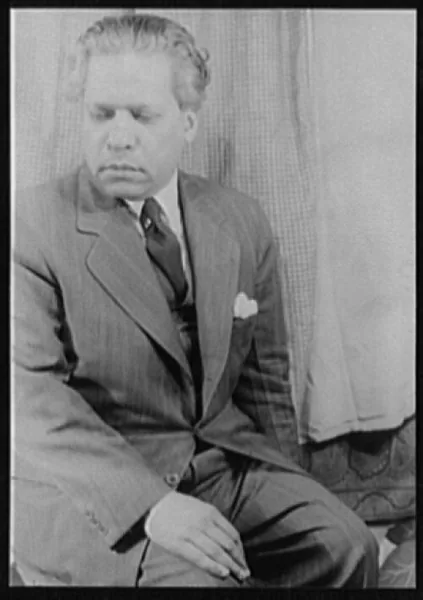
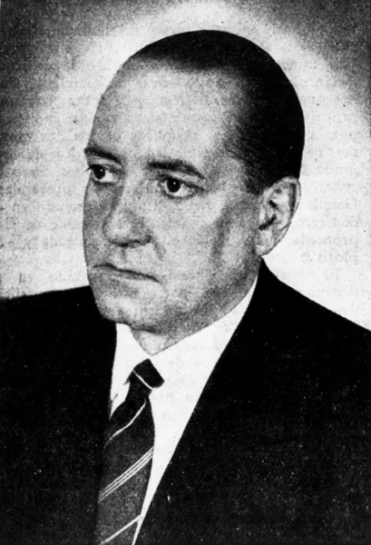
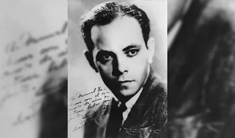
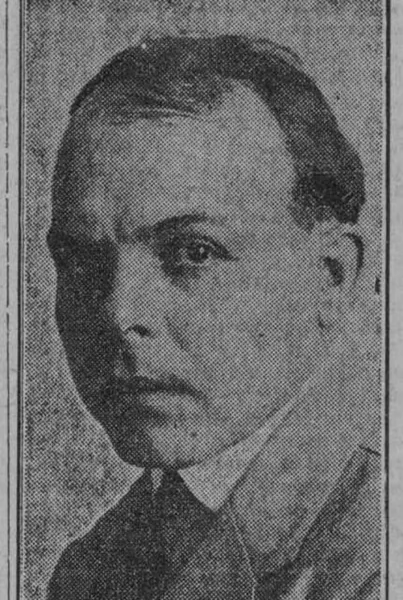

Contexto histórico de Cuba (1920–1930)
En los años veinte, Cuba dependía de la economía azucarera y de sus vínculos con Estados Unidos. Las crisis económicas y la creciente represión del gobierno de Machado, iniciado en 1925, acompañaron protestas y debates culturales.
El Grupo Minorista y la Revista de Avance impulsaron la renovación artística. Escritores, músicos y pintores discutieron la identidad cubana y dieron mayor lugar a sus raíces africanas. Las propuestas fueron diversas y relacionaron la experimentación con preocupaciones sociales.
Línea de tiempo
La crisis de la economía azucarera agrava las dificultades económicas de Cuba.
1923: la Protesta de los Trece denuncia la corrupción. En ese contexto surge el Grupo Minorista.
1925: Gerardo Machado asume la presidencia. Su gobierno se vuelve cada vez más represivo.
1927: comienza la Revista de Avance y se realiza la Exposición de Arte Nuevo en La Habana.
1929: la Gran Depresión agrava las dificultades de una economía dependiente de las exportaciones.
1930: Guillén publica Motivos de son. Ese mismo año termina la publicación de la Revista de Avance.
Artistas y referentes

renovó la poesía al incorporar ritmos, sonoridades y formas del habla afrocubana. Motivos de son (1930) es una referencia central de esta búsqueda.

participó en el ambiente minorista y en la renovación cultural. Su trabajo conectó literatura, música y reflexión sobre las raíces cubanas.

fue compositor y violinista. Integró elementos afrocubanos en propuestas de música de concierto y colaboró con Carpentier en proyectos que relacionaban música y escena.

participó en la renovación pictórica y en la Exposición de Arte Nuevo de 1927. Su trayectoria permite estudiar la relación entre pintura, vida cotidiana y debates culturales.
Grupo Minorista
El Grupo Minorista surgió en 1923 en un contexto de protesta intelectual. Reunió figuras como Rubén Martínez Villena, Juan Marinello y Alejo Carpentier. Sus integrantes impulsaron debates culturales y cuestionaron problemas políticos del país. La Protesta de los Trece permite reconocer que, para estos intelectuales, la intervención pública y la renovación de la cultura podían formar parte de un mismo compromiso.
Revista de Avance
Publicada entre 1927 y 1930, la Revista de Avance fue un espacio de encuentro entre literatura, artes visuales y pensamiento crítico. Difundió obras y debates, y favoreció el contacto con nuevas tendencias. La Exposición de Arte Nuevo de 1927, vinculada con su entorno, muestra cómo una publicación podía impulsar también actividades fuera de sus páginas y dar visibilidad a artistas emergentes.
Poesía afrocubana
Esta renovación poética incorporó ritmos musicales, repeticiones y sonoridades ligadas a experiencias afrodescendientes. Motivos de son, de Guillén, ejemplifica el diálogo entre poesía y música popular. No se trataba únicamente de hablar sobre una población: también cambiaba la forma del poema y el lugar de sus voces. Estas propuestas abrieron debates sobre representación, prejuicios raciales e identidad.
Afrocubanismo
El afrocubanismo fue una búsqueda cultural más amplia que la poesía: abarcó música, investigación, literatura y otras manifestaciones artísticas. Revalorizó las raíces africanas como parte de la cultura cubana. Las composiciones de Amadeo Roldán permiten observar su presencia en la música de concierto. Es importante reconocer la diversidad de estas experiencias y evitar reducirlas a un conjunto de ritmos o estereotipos.
¿Cómo interpretar esta vanguardia hoy?
Compará las ideas de la época con manifestaciones culturales actuales y construí una mirada propia.